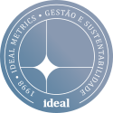

Com atuação desde 1998, apoiamos empresas na conquista de certificações, conformidade com padrões internacionais e inspeções de qualidade.
Consultores especializados
Com atuação desde 1998, apoiamos empresas na conquista de certificações, conformidade com padrões internacionais e inspeções de qualidade.
MEDIRMELHORARCOMPROVAR
Com atuação desde 1998, apoiamos empresas na conquista de certificações, conformidade com padrões internacionais e inspeções de qualidade.
Ideal Metricsdesde 1998
Medir, melhorar, comprovar
Consultores especializados
500+ projetos entregues · 300+ clientes atendidos
Com atuação desde 1998, apoiamos empresas na conquista de certificações, conformidade com padrões internacionais e inspeções de qualidade.
Consultores especializados

Normas ISO · Padrões de mercado · Gestão de carbono — desde 1998
Conheça nossos serviços →